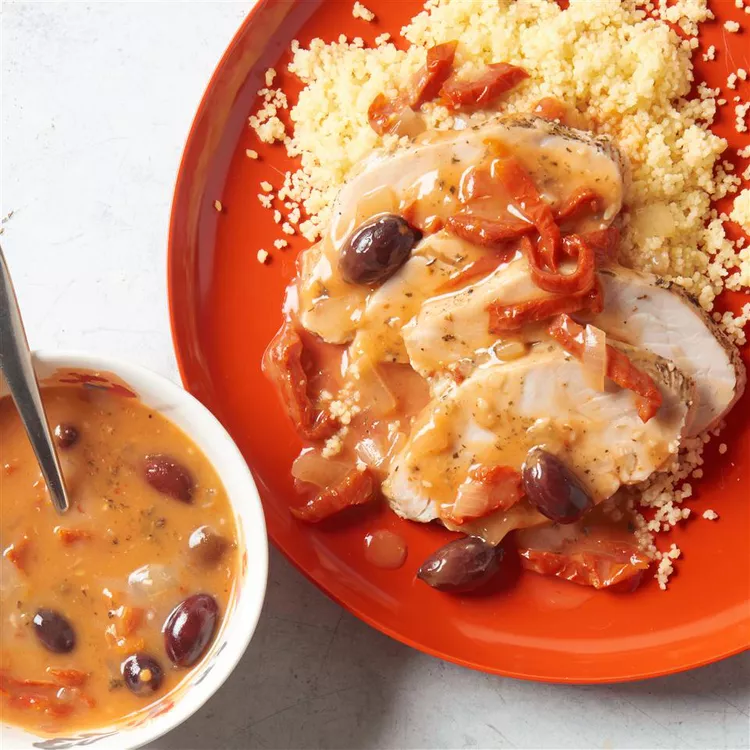

Home
Roast Turkey Breast
Roast Turkey Breast

Description
Easy to make, flavorful with a mild, savory flavor and a slight sweetness, with a tender,
succulent texture and creates a wonderful aroma to come home to
Prep Time: 20 mins
Cook Time: 7 hrs 30 mins
Total Time: 7 hrs 50 mins
Servings: 8
Yield: 8 servings
Ingredients
- 1 (4 pound) boneless turkey breast, trimmed
- ½ cup chicken broth, divided
- 2 tablespoons fresh lemon juice
- 2 cups chopped onion
- ½ cup pitted kalamata olives
- ½ cup oil-packed sun dried tomatoes, thinly sliced
- 1 teaspoon Greek seasoning (such as McCormick's®)
- ½ teaspoon salt
- ¼ teaspoon fresh ground black pepper
- 3 tablespoons all-purpose flour
Directions
- Place turkey breast, 1/4 cup chicken broth, lemon juice,
onion, kalamata olives, sun-dried tomatoes, Greek seasoning, salt, and pepper
in the crock of a slow cooker. Cover; cook on Low for 7 hours.
- Combine the remaining 1/4 cup chicken broth and the flour in a small bowl; whisk until smooth. Stir into slow cooker.
Cover and cook on Low for an additional 30 minutes.
Nutrition Facts (per serving)
- Calories: 333
- Fat: 5g
- Carbs: 9g
- Protein: 61g